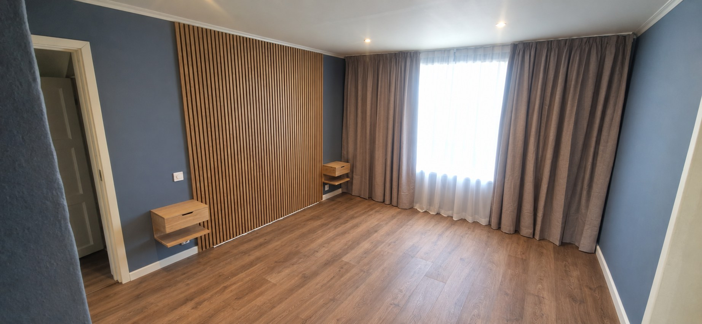
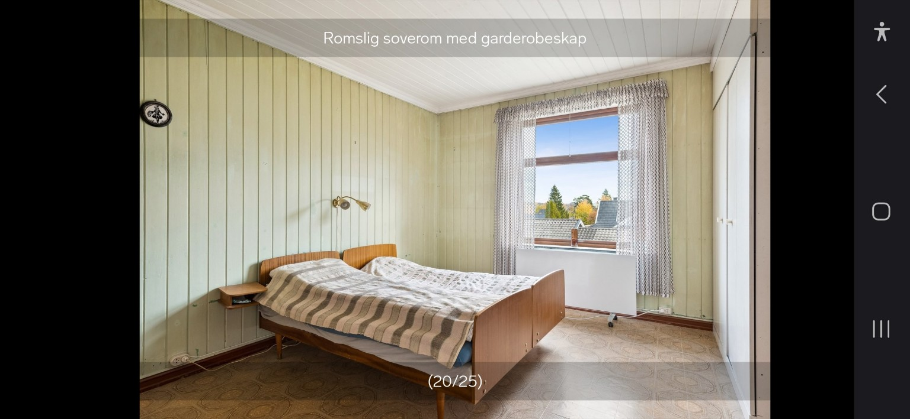

Et godt grunnlag.
Legging og tilpasning av nytt gulv. Velg også hjelp med riving, henting, bortkjøring og gulvlister.
Beregn gulvleggingGULV OG INNVENDIG OPPUSSING · VIKERSUND
Moholdt hjelper deg med gulv, vegger, panel og listverk i Modum og omegn. Fortell hva du ønsker gjort, og få et veiledende prisestimat.
Beregn pris på jobbenUforpliktende · Du godkjenner endelig pris før oppstart
ET ROM · FØR OG ETTER
Dra skillet til siden og se forandringen.


DETTE KAN JEG HJELPE MED
Velg arbeidet du trenger hjelp til. I kalkulatoren kan du kombinere flere tjenester.
Legging og tilpasning av nytt gulv. Velg også hjelp med riving, henting, bortkjøring og gulvlister.
Beregn gulvleggingGips på veggene eller panel på vegg og himling. Beskriv rommet og hva du vil forandre.
Beregn veggarbeidLister, foringer eller flere arbeider i samme rom. Samle ønskene dine i én oversikt.
Planlegg oppussingenEN OVERSIKTLIG START
Velg tjenester og legg inn omtrent hvor stort rommet er.
Tilpass hjelpen du trenger og få et veiledende prisestimat.
Omfang, underlag og endelig pris må avklares før arbeidet starter.
OM PRISESTIMATET
Estimatet gjelder arbeid og tilleggstjenestene du velger. Innkjøp av gulv, panel og andre materialer er ikke beregnet. Kjøring til arbeidsstedet og eventuell mva. er ikke avklart i denne testversjonen.
Nei. Kalkulatoren bruker foreløpige testpriser. Underlag, tilpasninger og omfang må vurderes før du får en endelig pris.
Utgangspunktet er Vikersund, med en grense på 1 time og 30 minutters kjøring én vei. Adressen og kjøretiden vurderes av Moholdt når forespørselen er mottatt.
HAR DU EN JOBB I TANKENE?
Velg tjenester, legg inn rom og fortell litt om jobben.
Åpne priskalkulatoren